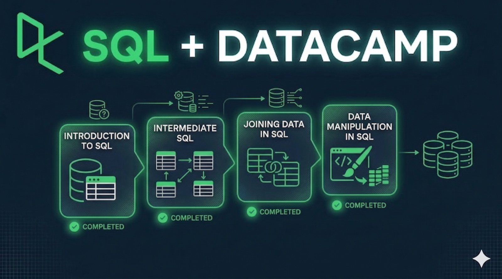
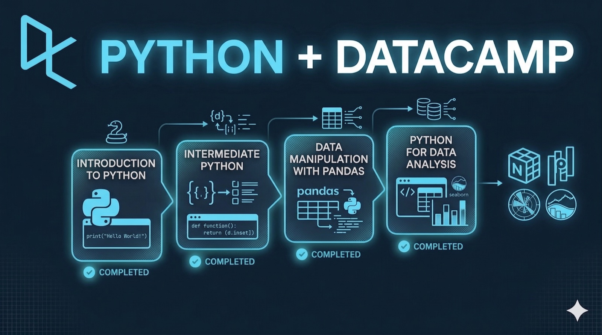
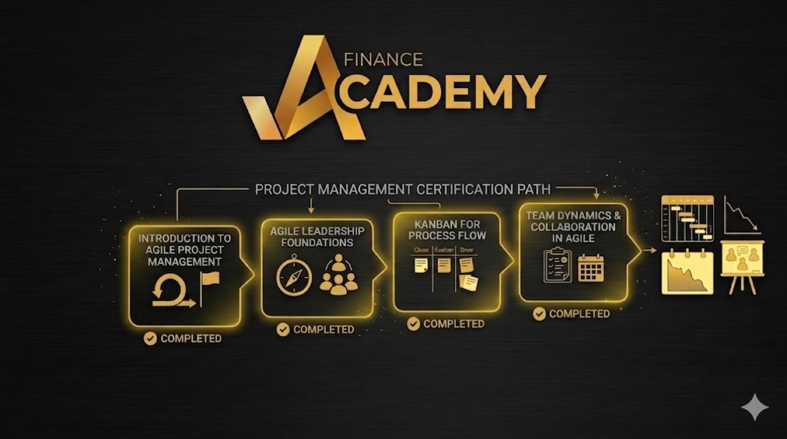
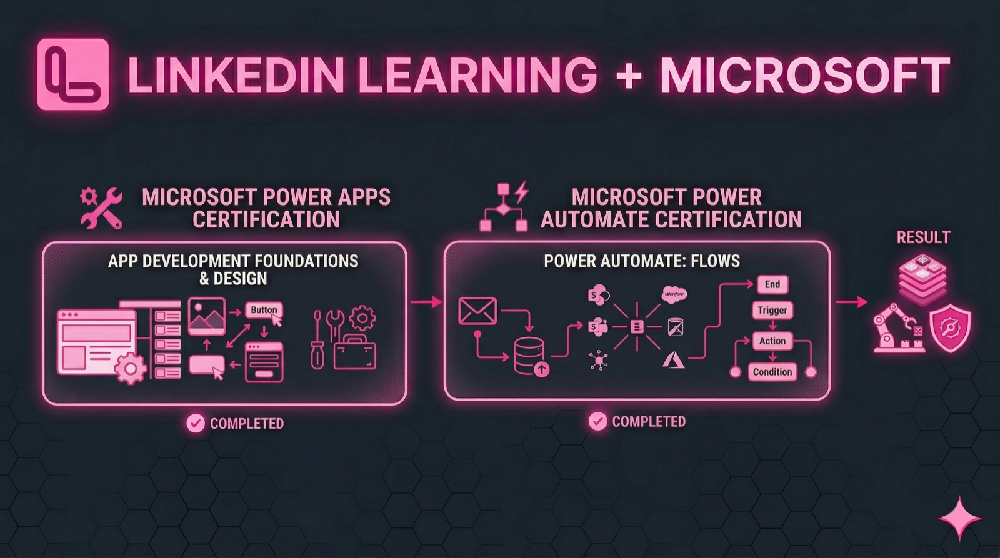

Power BI Service certification from Maven Analytics strengthened my practical understanding of publishing, sharing, and managing reports in the Power BI ecosystem. This certification reflects my ability to work with dashboards, collaboration features, and cloud-based automated business intelligence workflows.

Power BI Desktop certification from Maven Analytics strengthened my ability to build interactive dashboards and turn raw data into meaningful insights. This certification reflects practical knowledge in data modeling, visualization, and report development. It highlights my commitment to developing strong BI skills for real-world data analysis and decision-making.

Completed multiple SQL certifications from DataCamp, covering Introduction to SQL, Intermediate SQL, Joining Data in SQL, and Data Manipulation in SQL. These certifications strengthened my ability to query databases, combine tables, clean and transform data, and extract meaningful insights for analysis. Together, they reflect a solid foundation in SQL for real-world data analysis, reporting, and business intelligence work.

Completed a set of Python certifications through DataCamp, covering introductory, intermediate, and pandas-focused learning paths. These courses strengthened my foundation in Python programming, data handling, and practical analysis workflows. Through this training, I developed skills in writing cleaner code, working with structured data, and applying Python to real-world analytical tasks.

Completed project management certifications covering Agile, Agile Leadership, and Kanban, which strengthened my understanding of modern project delivery methods. These courses helped me build practical knowledge in planning, team coordination, workflow management, and continuous improvement. These certifications reflect my interest in combining analytical thinking with effective project execution.

Completed certifications in Microsoft Power Apps and Power Automate, which strengthened my skills in low-code app development and workflow automation. These courses helped me understand how to build business applications, streamline repetitive processes, and connect digital tools more efficiently. They also reflect my interest in improving everyday work through practical automation and user-friendly solutions.